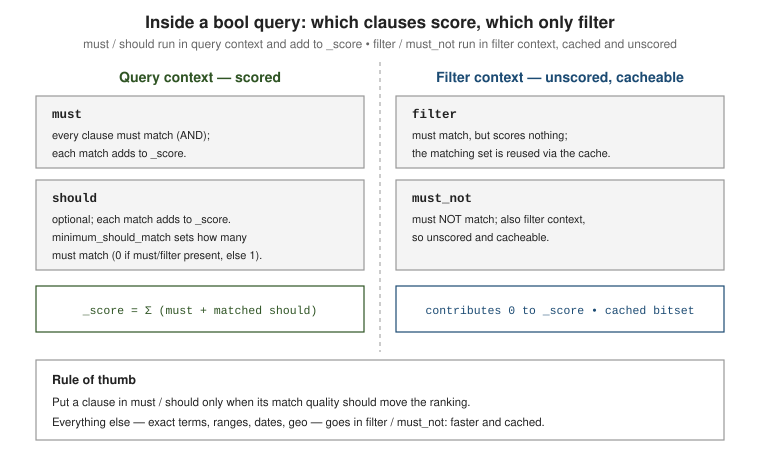

Compound queries, relevance & scoring
|
This section documents the current Elasticsearch 9.x line (with 8.19 as the final 8.x release) as published at the Elasticsearch documentation, which is the reference these pages are written and verified against. No specific patch version is pinned. Some capabilities (Kibana-only UIs, the ML/NLP model-management workflow, cross-cluster replication, and parts of the paid / serverless-only surface) are linked, not documented in depth. This content was generated with the assistance of AI and should be verified against the official documentation before being relied on in production, as Elasticsearch iterates quickly. This section’s bibliography lists the reference material consulted while preparing these pages. |
A compound query wraps other queries to combine their matches and their scores, or to switch off
scoring entirely. This page covers the bool query and its siblings, how Elasticsearch turns a
match into a _score with the BM25 similarity, how to see that calculation with the _explain API,
and the knobs — boosts, function_score, the script_score query and rescore — for bending the
ranking to your needs. See
Compound queries
for the full list.
The bool query
bool is the workhorse compound query. It has four clause types, each taking one query or an array
of queries. See
Boolean query.
| Clause | Meaning |
|---|---|
|
Every clause must match. Runs in query context: contributes to |
|
Optional clauses. Each match adds to |
|
Every clause must match, but in filter context: no score contribution, and the result is cacheable. |
|
No clause may match. Also filter context: unscored and cacheable. |
GET /products/_search
{
"query": {
"bool": {
"must": { "match": { "title": "wireless headphones" } },
"should": [
{ "match": { "brand": "acme" } },
{ "match_phrase": { "description": "noise cancelling" } }
],
"minimum_should_match": 1,
"filter": [
{ "term": { "in_stock": true } },
{ "range": { "price": { "lte": 200 } } }
],
"must_not": { "term": { "discontinued": true } }
}
}
}
How the score combines
The document’s _score is the sum of the scores of every matching clause in query context — the
must clauses plus any matching should clauses. filter and must_not never add anything. A
bool with only filter/must_not clauses gives every hit a _score of 0 (use
constant_score, below, if you want 1.0). Adding a matching should clause to a query that
already matches via must is the standard way to boost documents that also satisfy a "nice to
have" condition without excluding those that do not.
minimum_should_match
minimum_should_match controls how many should clauses a document must match to be a hit. The
default is 0 when the bool also has a must or filter clause, and 1 when should is the
only clause type present. It accepts a fixed count, a percentage, or a combination. See
minimum_should_match.
GET /articles/_search
{
"query": {
"bool": {
"should": [
{ "match": { "body": "elasticsearch" } },
{ "match": { "body": "relevance" } },
{ "match": { "body": "scoring" } },
{ "match": { "body": "lucene" } }
],
"minimum_should_match": "75%" // at least 3 of the 4 must match
}
}
}Query context vs. filter context
The same clause is cheaper in filter context. A filter-context query answers only yes/no, skips
all similarity math, and Elasticsearch caches the resulting set of matching documents (a bitset per
segment) so repeated use of the same term/range/exists clause is close to free. A
query-context query also computes a relevance score. Put a clause under filter/must_not (or
wrap it in constant_score) whenever its match quality should not influence ranking — exact-value
terms, ranges, dates, geo. See
Query and filter context
and, for the term-level queries that typically go there,
Term-level queries. Full-text scoring queries
that belong in must/should are covered in
Full-text queries.
Other compound queries
dis_max
dis_max ("disjunction max") runs several queries and takes the single highest clause score
rather than the sum, then adds tie_breaker times each other clause score. Use it when the same
words are searched across competing fields and you do not want a document that matches weakly in
several fields to outrank one that matches strongly in the best field. multi_match with type:
best_fields (the default) compiles down to a dis_max. See
Disjunction max query.
GET /products/_search
{
"query": {
"dis_max": {
"queries": [
{ "match": { "title": "quick fox" } },
{ "match": { "description": "quick fox" } }
],
"tie_breaker": 0.3
}
}
}constant_score
constant_score wraps a query, runs it in filter context (so it is cached and unscored internally),
and assigns every hit a fixed score set by boost (default 1.0). It is the explicit way to say
"this condition must hold but must not affect ranking". See
Constant score query.
GET /products/_search
{
"query": {
"constant_score": {
"filter": { "term": { "category": "keyboards" } },
"boost": 1.2
}
}
}boosting
boosting returns documents matching positive, but demotes — rather than excludes — those
that also match negative, multiplying their score by negative_boost (0 to 1). Use it to push
down a class of results (say, older revisions) without removing them the way must_not would. See
Boosting query.
GET /articles/_search
{
"query": {
"boosting": {
"positive": { "match": { "body": "kubernetes networking" } },
"negative": { "match": { "tags": "deprecated" } },
"negative_boost": 0.3
}
}
}Relevance: the BM25 similarity
Elasticsearch ranks full-text matches with BM25 (BM25Similarity in Lucene), the default
similarity for text fields since 5.0 — it replaced the classic TF/IDF vector-space model. Both
build on the same two intuitions: a term that appears more often in a document is more relevant to
it (term frequency, TF), and a term that appears in fewer documents across the index is more
discriminating (inverse document frequency, IDF). BM25 refines this by saturating term frequency — the tenth occurrence of a word adds far less than the second — and by normalising for document
length, so a match in a short title counts for more than the same match buried in a long body.
See
Theory behind relevance scoring
and
Similarity module.
Summing over each query term, the BM25 score of a document is:
Here f_t,d is the frequency of term t in the field, L_d the field length in terms and L_avg
the average field length across the index. Two tunables: k1 (default 1.2) sets how fast term
frequency saturates — higher means extra occurrences keep mattering; b (default 0.75) sets how
strongly length normalisation applies — 0 disables it. The length component relies on
field-length norms, a small value stored per field at index time; disabling norms in the mapping
(as for a pure filter field) removes length normalisation for that field.
Override the parameters, or pick a different similarity (for example boolean for pure keyword
matching), in the mapping:
PUT /articles
{
"settings": {
"index": {
"similarity": {
"tuned_bm25": { "type": "BM25", "k1": 1.4, "b": 0.6 }
}
}
},
"mappings": {
"properties": {
"title": { "type": "text", "similarity": "tuned_bm25" },
"tag": { "type": "keyword", "similarity": "boolean" }
}
}
}Seeing the calculation: the _explain API
_explain shows exactly how a score was produced for one document, term by term. Call the dedicated
endpoint for a single id, or add ?explain=true (or "explain": true in the body) to a _search
to get an _explanation object alongside every hit. See
Explain API.
GET /articles/_explain/42
{
"query": { "match": { "title": "relevance scoring" } }
}
// Or inline in a search, for every hit:
GET /articles/_search?explain=true
{
"query": { "match": { "title": "relevance scoring" } }
}The response nests one entry per term, each showing the idf, tf and length factors that BM25
multiplied together, so you can see which term or which field drove the ranking.
Tuning the score
Query-time boost
Most leaf queries take a boost factor that multiplies that clause’s score; > 1 promotes, < 1
demotes. Boost is relative within a single query, not an absolute weight, and non-linear — treat it
as a coarse dial. See
boosting bool clauses
and
the removal of index-time boost — only query-time boost remains.
GET /products/_search
{
"query": {
"bool": {
"should": [
{ "match": { "title": { "query": "laptop stand", "boost": 3 } } },
{ "match": { "description": "laptop stand" } }
]
}
}
}indices_boost
indices_boost multiplies the score of every hit from a named index when a search spans several.
Typical use is ranking a "current" index above an "archive" one in the same request. See
search request body
(the indices_boost parameter).
GET /logs-2024,logs-2023/_search
{
"indices_boost": [
{ "logs-2024": 2.0 },
{ "logs-2023": 0.5 }
],
"query": { "match": { "message": "connection reset" } }
}Named queries and matched_queries
Give any query a _name and each hit reports, in matched_queries, which named clauses it matched — useful for debugging relevance and for driving UI facets. Recent versions can also return the
per-clause scores, by passing matched_queries as an object with include_scores enabled. See
Named queries.
GET /products/_search
{
"query": {
"bool": {
"should": [
{ "match": { "title": { "query": "usb hub", "_name": "title_match" } } },
{ "term": { "brand": { "value": "acme", "_name": "brand_match" } } }
]
}
}
}
// each hit -> "matched_queries": ["title_match", "brand_match"]function_score and script_score
function_score wraps a query and rewrites its score with one or more functions — the tool for
blending textual relevance with signals like popularity, recency or price. See
Function score query.
Functions:
-
field_value_factor— derive a factor from a numeric field (factor,modifiersuch aslog1p/sqrt,missing). Cheaper and safer than a script for the common "multiply by a popularity number" case. -
script_score— a Painless expression returning the new score;_scoreanddoc['field']are in scope. -
random_score— a deterministic pseudo-random score from aseed+field; used for stable result shuffling per user. -
Decay functions
gauss,linear,exp— score by distance from anoriginon a date, numeric orgeo_pointfield, falling todecay(default0.5) atorigin ± (offset + scale).gaussis the usual choice for "prefer results near now / near here".
score_mode combines multiple functions with each other (multiply default, sum, avg, first,
max, min); boost_mode combines that result with the original query _score (multiply
default, replace, sum, avg, max, min).
GET /articles/_search
{
"query": {
"function_score": {
"query": { "match": { "body": "search relevance" } },
"functions": [
{ "field_value_factor": { "field": "likes", "modifier": "log1p", "factor": 0.5, "missing": 0 } },
{
"gauss": {
"published_at": { "origin": "now", "scale": "30d", "offset": "7d", "decay": 0.5 }
}
},
{ "random_score": { "seed": 10, "field": "_seq_no" }, "weight": 0.1 }
],
"score_mode": "sum",
"boost_mode": "multiply"
}
}
}The standalone script_score query
For a pure custom-scoring need, the top-level script_score query is lighter than function_score:
it runs a query and replaces every score with a script result. _score is available via
_score.get(); helper functions such as saturation, sigmoid and randomScore are provided for
BM25-friendly shapes. See
Script score query.
For the Painless language itself see
Query languages & scripting.
GET /products/_search
{
"query": {
"script_score": {
"query": { "match": { "title": "mechanical keyboard" } },
"script": {
"source": "_score * saturation(doc['sales'].value, params.pivot)",
"params": { "pivot": 100 }
}
}
}
}
script_score is also how you combine a kNN vector match with a lexical score in a single
pass; see Vector & semantic search.
|
rescore
Scoring every matching document with an expensive query is wasteful when only the first page
matters. rescore runs a cheap query first, then re-scores just the top window_size hits per
shard with a costlier query, blending the two scores by query_weight / rescore_query_weight and
score_mode. Because it only touches the top-N, an expensive match_phrase or function_score
becomes affordable. Rescore does not change which documents match, only the order of the ones near
the top. See
Filter search results
(the rescore section).
GET /articles/_search
{
"query": {
"match": { "body": { "query": "distributed consensus", "operator": "or" } }
},
"rescore": {
"window_size": 100,
"query": {
"rescore_query": {
"match_phrase": { "body": { "query": "distributed consensus", "slop": 2 } }
},
"query_weight": 0.7,
"rescore_query_weight": 1.5
}
}
}For pagination of the results this ranking produces, and for search_after + PIT on deep pages, see
Search API & pagination.